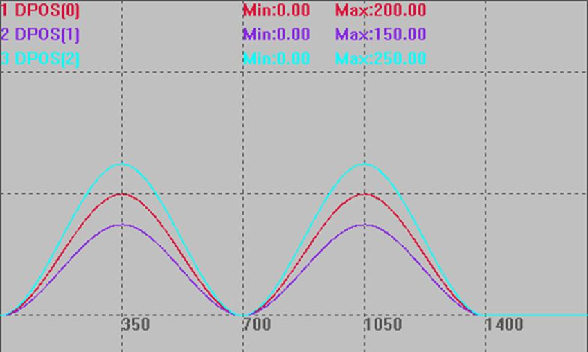
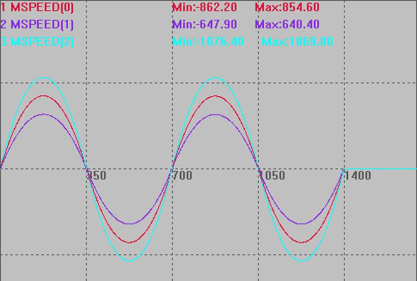
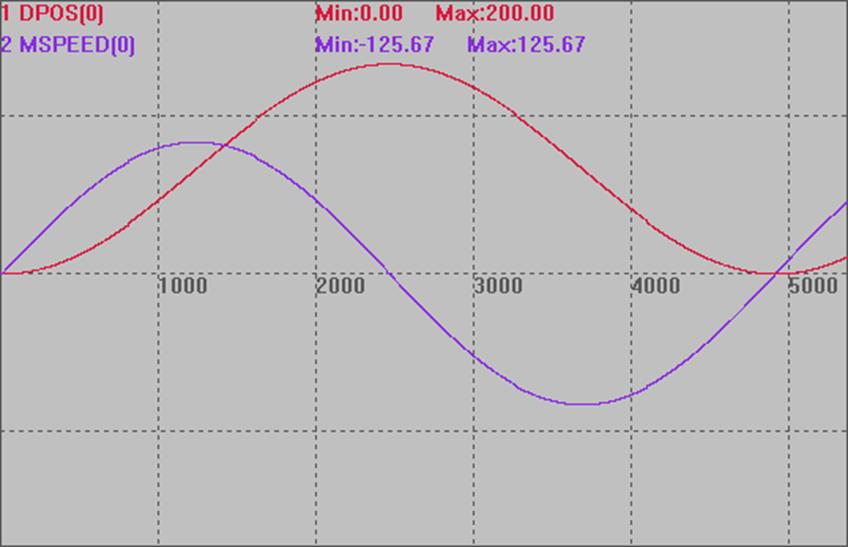

|
类型 |
特殊运动指令 |
|
描述 |
在一段时间内驱动电机运动设置的距离, 带速度规划，可以指定结束速度, 小段内速度会自动根据前面的速度与结束速度来自动规划, 尽可能连续。
一般是PC每个周期计算好对应的坐标，然后传给控制器。 支持使用BASE指定轴。 运动时的速度=(DIS/TICKS)*1000 units/s。 不要在极短时间运动大距离，脉冲频率会过高，电机堵转，可以分解成小段，重复发送。 |
|
语法 |
MOVE_PVT (ticks, dis1, sp1,dis2, sp2 …) ticks ：时间的伺服周期数。 dis1：第一个轴运动的距离 sp1：第一个轴运动后的结束速度 dis2：第二个轴的运动距离 sp2：第二个轴运动后的结束速度
SERVO_PERIOD为1000us的控制器1 TICKS为1ms(不同SERVO_PERIOD的TICKS时间不一样) |
|
适用控制器 |
通用 |
|
例子 |
例一 BASE(0,1,2) UNITS = 10,10,10,10 DPOS = 0,0,0,0 SPEED=10,10,10,10 ACCEL=1000,1000,1000,1000 DECEL=1000,1000,1000,1000 MERGE = ON TRIGGER MOVE_PVT(350,200,10,150,10,250,10)'在一个周期内,轴0,1,2运行200,150,250的距离，结束速度为10 MOVE_PVT(350,-200,10,-150,10,-250,10)'在一个周期内,轴0,1,2运行-200,-150,-250的距离，结束速度为10 MOVE_PVT(350,200,10,150,10,250,10) MOVE_PVT(350,-200,10,-150,10,-250,10)
DPOS(0)、DPOS(1)、DPOS(2)垂直刻度200  MSPEED(0)、MSPEED (1)、MSPEED (2)垂直刻度1000 
例二： BASE(0) UNITS = 100 ATYPE=0 DPOS = 0 SPEED=10 ACCEL=100 DECEL=100
DIM timeadd DIM val1 DIM SPEEDval timeadd=0
DPOS =100*COS(2*PI*0.2*timeadd+pi)+100
DELAY(1000) TRIGGER
WHILE TRUE
'周期=2π/|ω| 'x=A*COS（ωx+ψ）+C
'求导得斜率，即速度： 'v=-A*ω*SIN（ωx+ψ）
val1=100*COS(2*PI*0.2*timeadd+pi)+100
SPEEDval=-100*2*PI*0.2*SIN(2*PI*0.2*timeadd+pi)
?"val1="val1 ?"SPEEDval="SPEEDval
MOVE_PVTABS(10,val1,SPEEDval)
'MOVE_PTABS(10,val1)
timeadd=timeadd+0.01
if timeadd>(2*PI/ABS(2*PI*0.2)*2) THEN EXIT WHILE ENDIF WEND DPOS(0)、MSPEED(0)垂直刻度150  |
|
相关指令 |